Apresentação dos Integrantes
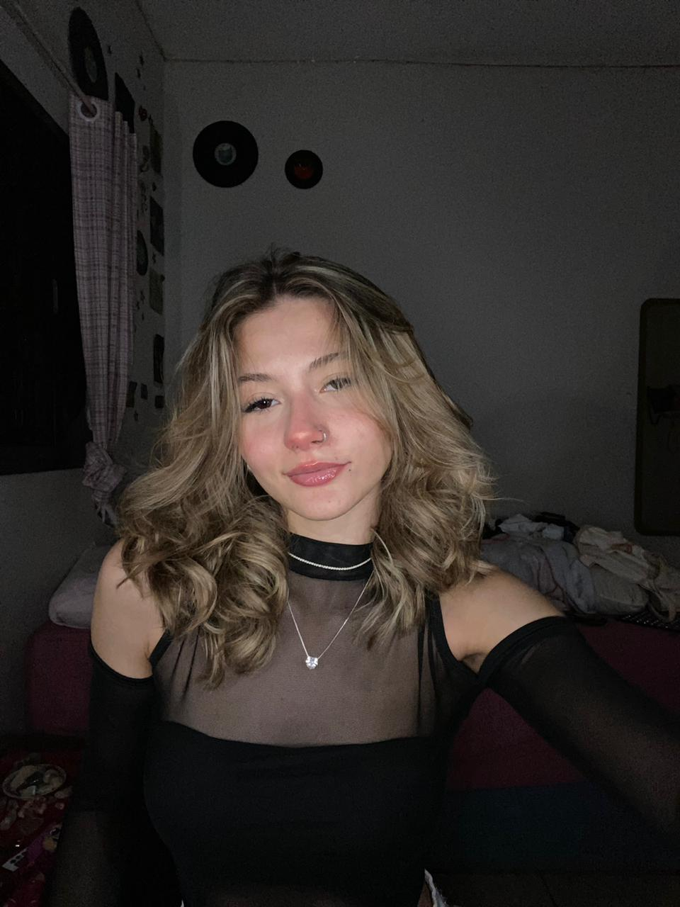
Contexto Histórico, Social e Cultural
| Histórico | Social | Cultural |
|---|---|---|
|
• Surgiu na Europa, principalmente na França, após a Primeira Guerra Mundial (1918). • A guerra causou grande destruição, medo e descrença na razão e no progresso científico. |
Após a Primeira Guerra Mundial, a sociedade europeia vivia um momento de crise moral e existencial. As pessoas estavam desiludidas com os valores que antes sustentavam a civilização: como a razão, o progresso e a ciência, pois esses mesmos ideais haviam levado à guerra e à destruição. Nesse cenário, muitos artistas passaram a buscar uma forma de libertar a mente humana das limitações impostas pela sociedade, defendendo a imaginação e o inconsciente como meios de transformação. |
Culturamente, esse período foi marcado por grandes inovações artísticas. O Surrealismo aproximou a arte da vida, explorando o universo dos sonhos, desejos e pensamentos ocultos. O movimento influenciou várias áreas, como a pintura, a literatura, o cinema e até a moda. Assim, o Surrealismo representou não apenas uma nova estética, mas também uma revolta cultural e espiritual, que buscava libertar o ser humano da rigidez racional e social da época. |
Características do Surrealismo
Visuais
- Imagens de sonhos e fantasia, com cenas ilógicas
- Mistura de realidade e imaginação, criando situações impossíveis
- Detalhismo realista mesmo em elementos absurdos (como nos quadros de Dali)
Filosóficas
- Influência da psicanálise de Freud e do inconsciente
- Valorização da imaginação como forma de libertação
- Tentativa de unir sonho e realidade em uma "surrealidade"
Temáticas
- Exploração do inconsciente, dos desejos e dos sonhos
- Crítica à razão e à sociedade tradicional
- Busca pela liberdade criativa e emocional
Obras e Artistas Representativos
Manifesto Surrealista (1924)
Artista: André Breton
Especificações:
- Data: 1924
- Técnica: Texto literário (manifesto em prosa)
- Composição: Escrita livre, com tom poético e argumentativo, rompendo com a estrutura racional
- Cor: Uso simbólico e metafórico da linguagem para criar imagens mentais e emoção
- Forma: Estrutura não linear e provocadora, refletindo o ideal surrealista de libertar o pensamento da lógica e unir sonho e realidade
A Persistência da Memória (1931)
Artista: Salvador Dalí
Especificações:
- Data: 1931
- Técnica: Óleo sobre tela
- Composição: Equilibrada e detalhista, com objetos organizados num cenário silencioso e desértico
- Cor: Tons terrosos contrastam com o azul frio do céu, criando um clima de sonho e solidão
- Forma: Figuras realistas, mas distorcidas, especialmente os relógios derretendo, que simbolizam a fluidez do tempo e a fragilidade da realidade
A Traição das Imagens (1929)
Artista: René Magritte
Especificações:
- Data: 1929
- Técnica: Óleo sobre tela
- Composição: Simples e centralizada, com um cachimbo realista sobre fundo neutro e a frase "Isto não é um cachimbo"
- Cor: Paleta suave, com tons neutros que destacam o objeto principal
- Forma: Realismo detalhado que contrasta com a mensagem escrita, que provoca reflexão sobre o que é real e o que é representação
Proposta do Projeto
Oakley e o Surrealismo
A nova identidade da Oakley inspira-se no Surrealismo, um importante legado artístico que revolucionou a arte ao explorar o inconsciente.
O olho derretendo é o símbolo central, representando a visão que transcende o real — a essência da inovação da marca, o sonho.
Essa escolha estética não só confere sofisticação, mas também estabelece uma conexão com a herança de quebra de paradigmas artísticos, utilizando uma paleta de cores profundas e uma tipografia clássica como contraponto.
Marca Original vs Nova Proposta
O símbolo oval original sugere tecnologia e velocidade; a tipografia robusta passa confiança; e o preto reforça sofisticação e seriedade.
A identidade da Oakley apresenta alguns problemas visuais: o símbolo pode parecer genérico, a tipografia é rígida, o design pouco versátil e a paleta restrita, dando uma aparência um pouco ultrapassada frente a marcas mais modernas.
A escolha pelo surrealismo na logo busca ir além do design comercial, transformando a marca em um símbolo de percepção ampliada e criatividade sem limites, onde o olhar — representado pelo olho derretendo — torna-se metáfora para a visão inovadora e fora do comum. A logo mostra em que não há limites quando o assunto é criatividade, trazendo presença para a marca.
Nova Identidade Visual
A nova proposta visual da Oakley é inspirada no Surrealismo, o movimento artístico que explora o inconsciente e distorce a realidade.
Conceito Central
A imagem do olho derretendo/líquido simboliza uma visão que transcende o real, metaforizando a percepção e a inovação da marca (referência a obras de Salvador Dalí).
Paleta de Cores
A Oakley é uma marca associada à inovação óptica, tecnologia e visão diferenciada. O surrealismo, por sua vez, representa a distorção da realidade, o subconsciente e o onírico.
A paleta tem o equilíbrio perfeito entre cores racionais (frias, neutras) e cores emocionais (quentes, intensas) — o que traduz muito bem essa dualidade.
Tipografia
As fontes Space Grotesk e Inter, ambas sem serifa, oferecem clareza e modernidade, criando uma identidade visual limpa e contemporânea.
Versões da Logo
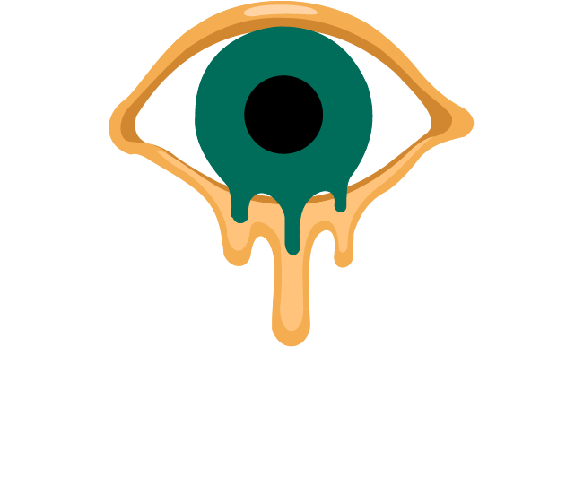
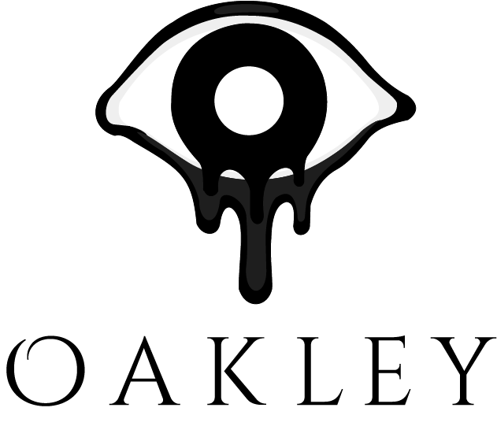
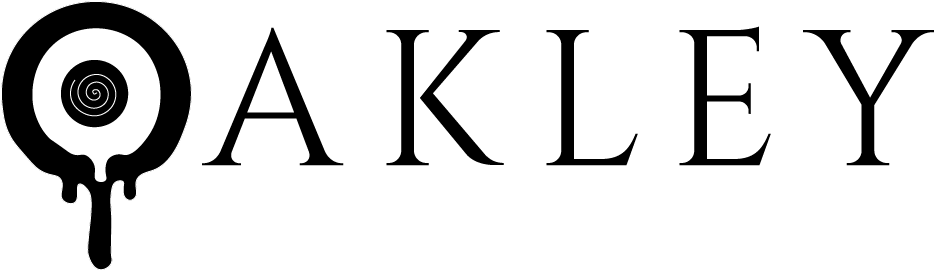
Aplicações da Identidade Visual
Mockups

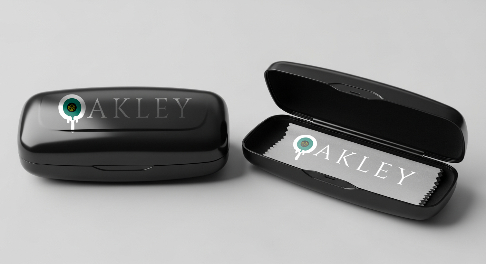
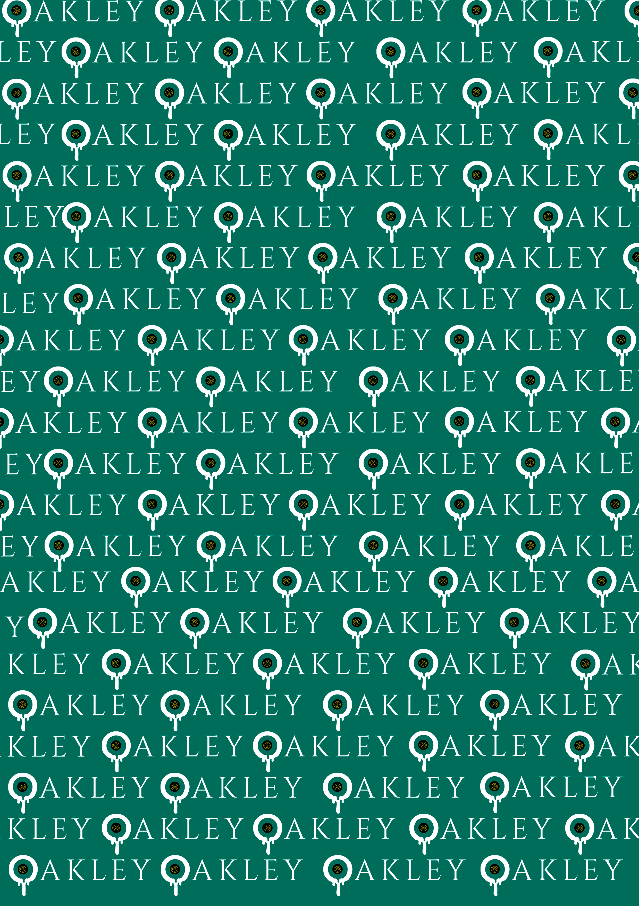
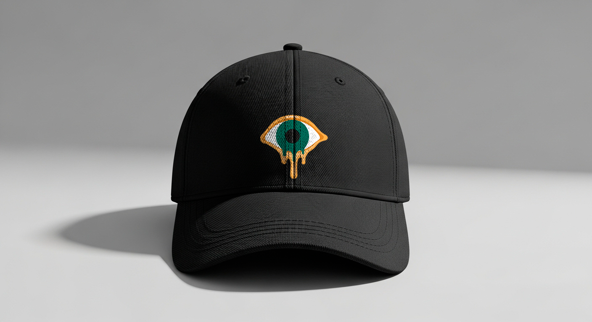
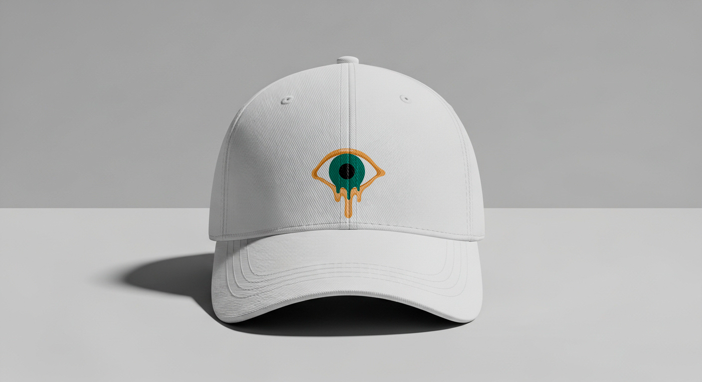
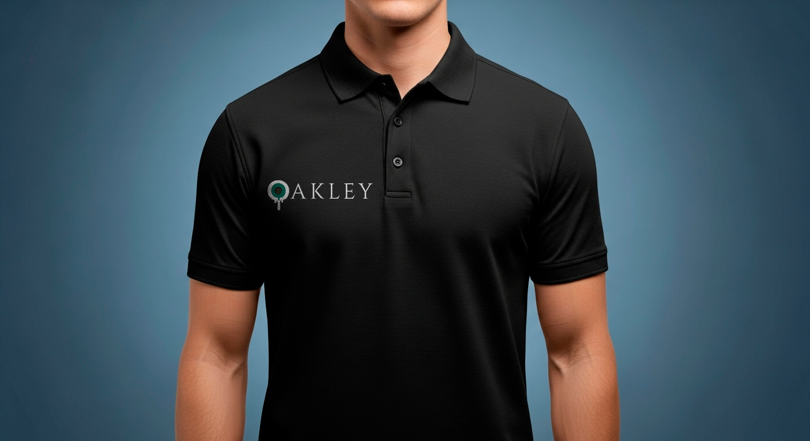
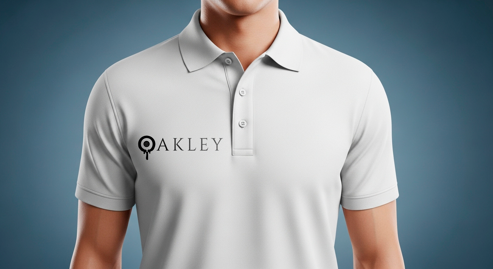

Cartões de Visita
.png)

Arte Criativa e Justificativa
Criação de um Vídeo
Justificativa
Nós escolhemos o vídeo pois é o formato mais eficaz de propaganda, sendo responsável pelo:
- Engajamento - pois prende a atenção do público de forma mais rápida e por mais tempo (áudio e visual).
- Demonstração - pois mostra o produto em ação, tirando dúvidas e aumentando a confiança.
- Conversão - pois aumenta a intenção de compra por ser um conteúdo mais rico e emocionalmente envolvente.